SekiWiki

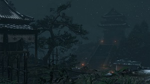
Ponto inicial do jogo, onde Sekiro tenta resgatar Kuro.
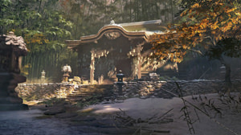
Um templo budista em ruínas que serve como refúgio seguro para o Escultor, Sekiro e outros que vagam pela região.
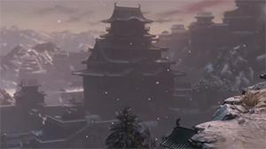
Os arredores do Castelo Ashina são protegidos por inimigos poderosos e seu líder Gyoubu. Uma serpente gigante também percorre o vale próximo.
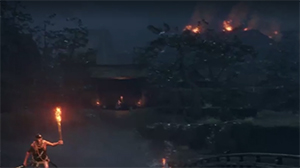
É o ano do Dragon Spring, e ladrões atacam a propriedade Hirata enquanto seus guerreiros estão ausentes. Proteja seu mestre a todo custo.

O Castelo Ashina é fortemente protegido por samurais habilidosos e tropas Tengu agressivas, que defendem o domínio de Genichiro Ashina.
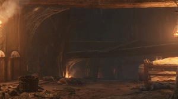
As cavernas escuras e inundadas da Masmorra Abandonada escondem as técnicas cirúrgicas proibidas do clã Ashina e invocam espíritos aterrorizantes.
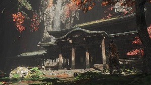
Os monges do Templo Senpou abandonaram o caminho da iluminação e profanaram os salões de Buda, corrompidos pela busca da imortalidade e das Águas Rejuvenescedoras.
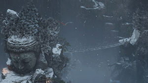
Os penhascos ao redor do Castelo Ashina são protegidos por atiradores experientes e implacáveis, embora não sejam tão perigosos quanto aparentam.
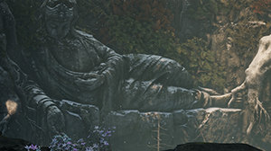
O Vale do Bodhisattva entra em decadência à medida que águas estagnadas corrompem lentamente suas raízes, e a vida selvagem local se adapta ao novo ambiente hostil.
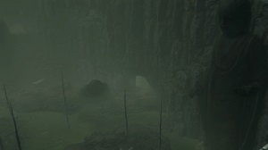
O veneno que flui das Profundezas de Ashina está por trás da corrosão de todo o vale e é protegido por temíveis macacos gigantes.
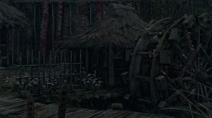
Nas profundezas de Ashina, aldeões imortais cultivam plantações invisíveis, presos em sua existência eterna e corrompida.

Através do belo Palácio Celestial fluem as águas da vida. Mas, apesar das aparências, sua essência corrompe os mortais que entram em contato com ela.
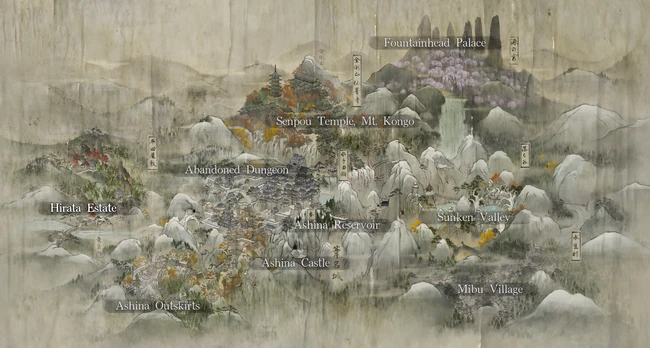